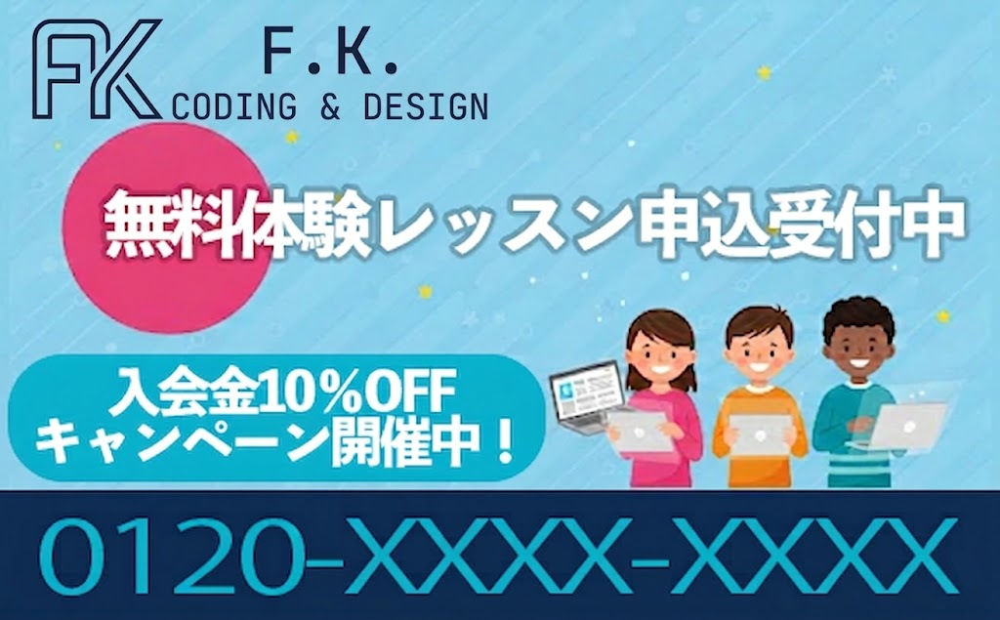

新たな市場を作り出す試み
私たちが提案する「子ども向けWebデザイン教室」は、これまでほとんど前例のない、新たな市場を切り拓く挑戦です。プログラミングや英会話、スポーツなど「習い事の定番」だけではカバーしきれない、デザイン×デジタルスキルという未開拓領域の可能性に着目しました。
プロ仕様のMac
無料レンタル中！
好きを才能に！
一生モノの
デザインスキル
無料体験レッスン
申込受付中
私たちが提案する「子ども向けWebデザイン教室」は、これまでほとんど前例のない、新たな市場を切り拓く挑戦です。プログラミングや英会話、スポーツなど「習い事の定番」だけではカバーしきれない、デザイン×デジタルスキルという未開拓領域の可能性に着目しました。
変化の激しいVUCA時代には、一つの世界観やスキルだけにとらわれていては柔軟に対応できません。デザインは、さまざまな職業・活動の中で活かせる「汎用性の高いスキル」です。
テクノロジーが進化し、デジタルクリエイティブの需要は今後ますます高まると予想されます。子どものうちからWebデザインを学べるスクールは、現在の市場では見つからない状況です。
本事業は、そんな時代のニーズに応える教育サービスです。

A. もちろんです。電源の入れ方やマウス操作、タイピングといった基本から、プロ仕様のMacを使って現役のクリエイター講師がマンツーマン感覚で丁寧に指導します。1つずつステップを踏んでいくので、いつの間にかプロの道具を使いこなせるようになります。
A.教室内ではプロ仕様のMacの無料レンタルが可能となっています。また、自宅学習用のレンタルプランや、導入ソフトの学生割引適用などのサポートも充実しています。初期費用を抑えて、最高峰の制作環境でスタートすることが可能です。
A. はい、ご安心ください。私たちは「教える」のではなく、お子様の「創りたい」に火をつけるアプローチを重視しています。 一般的なスクールのような「受け身の授業」ではなく、モンテッソーリ教育に基づき、お子様自身が選んだ「好きなもの（推しの紹介サイト、自分の描いた絵など）」を教材にします。 「自分の作品が形になり、誰かに褒められる」という成功体験が短期間で得られるため、自発的な集中力が驚くほど持続します。
A. 「ロジック（論理）」だけでなく、「表現力」と「社会性」を同時に育てる点が大きな違いです。 プログラミングは「正しく動かすこと」がゴールになりがちですが、Webデザインは「相手にどう伝えるか、どう喜んでもらうか」という視点が不可欠です。 名刺やLINEスタンプ、Webサイトなど、目に見える「成果物」が社会とつながる実感を得やすいため、将来どのような職業に就いても役立つ「課題解決力」が身につきます。
A. 「消費する側」から「価値を創る側」へ、視点を180度転換させます。 普段見ているYouTubeのサムネイルやWebサイトが「どう作られているのか？」という裏側の仕組みを知ることで、お子様のデジタルへの接し方は劇的に変わります。 プロ仕様のMacを使い、デザインの原則（色の心理効果やレイアウト）を学ぶことで、デジタルを「ただの遊び道具」ではなく「自分の武器」として認識するようになります。
A. サポートはすべてプロの講師にお任せください。ご家庭では「驚き、褒めること」だけで十分です。 現役のクリエイター講師が、お子様のレベルに合わせてマンツーマンに近い形で伴走します。レッスンの様子や成長の記録は、動画やチャットで詳しく共有いたします。 親御様が技術的なことを教える必要はありません。完成した作品をURLで共有した際に、ぜひ「すごいね！」と一緒に喜んであげてください。その承認が、お子様の最大の原動力になります。
A. 「当日振替自由」のシステムを採用しており、忙しいお子様でも無理なく継続できます。 急な体調不良や部活の延長、試験勉強期間など、ライフスタイルに合わせて柔軟にスケジュールを変更いただけます。オンライン受講も選択可能なため、送迎の手間を省きながら、全国どこからでも本格的なクリエイティブ教育を受けられます。